地政学
カラカスは大統領府、国会、最高裁、各省、大使館が集まるベネズエラ政治の中心です。カリブ海、アンデス、オリノコ、米国、キューバ、コロンビアとの関係が、首都の緊張を形作ります。外交も日常に近いです。今も。
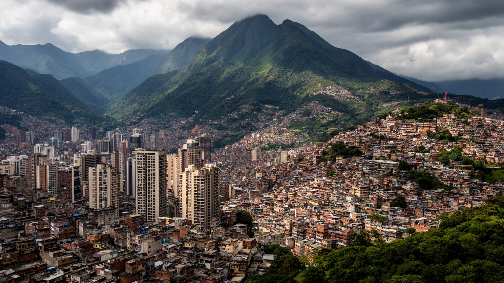
🇻🇪 ベネズエラ / 首都地区・ミランダ州 / World City Atlas
アビラ山の南麓に広がるベネズエラの首都です。国政、石油国家の制度、金融と商業、丘陵のバリオ、地下鉄、音楽、信仰、治安、移民、食文化が、狭い谷の都市空間に凝縮されています。
都市の骨格
カラカスはカリブ海の背後にある谷の都市です。政治権力、石油経済、文化、交通、丘陵住宅、治安、移民の記憶が近い距離で交わり、ベネズエラの近現代を歩いて読めます。
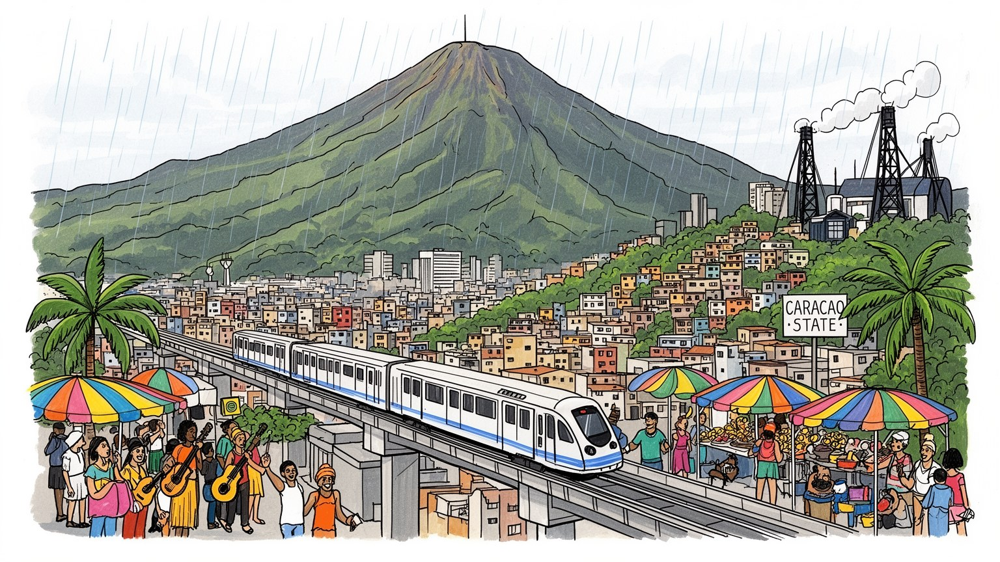
カラカスは大統領府、国会、最高裁、各省、大使館が集まるベネズエラ政治の中心です。カリブ海、アンデス、オリノコ、米国、キューバ、コロンビアとの関係が、首都の緊張を形作ります。外交も日常に近いです。今も。
石油国家の行政、金融、通信、商業、医療、教育、文化産業、小売、屋台、家事労働が雇用を支えます。インフレ、為替、移民、賃金の不安定さは、働く人の時間と選択を大きく左右します。現金と送金も重要です。今も。
サルサ、演劇、テレビ、野球、大学文化、カトリックの祭礼、福音派教会、民間信仰が重なります。政治的な分断の中でも、音楽、家族、祈り、食卓が都市の結び目を保ちます。広場の記憶も深いです。街も強いです。
旅行者はアビラ山、旧市街、大学都市、美術館を訪ねます。住民には水、電気、交通、治安、物価、医療、移民家族との送金が現実で、谷の景観と生活の重さが並びます。市場の活気も街を支えます。日々も続きます。
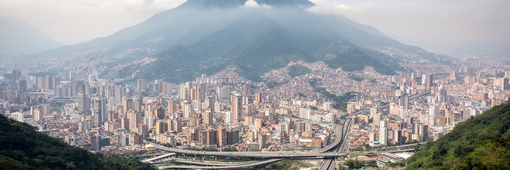
カラカスは、カリブ海から急に立ち上がるアビラ山の南側に開けた谷にあります。海に近いのに都市の中心は標高のある盆地にあり、山は涼しさ、景観、保護、境界を同時に与えます。谷底には行政地区、業務地区、大学、地下鉄、幹線道路が走り、斜面には住宅地やバリオが広がります。地形が狭いため、交通、排水、住宅、緑地、災害対応は常に空間の制約を受けます。アビラ山は観光の象徴であり、市民の週末の逃げ場でもありますが、山麓の開発や斜面住宅は土砂災害と森林火災のリスクも抱えます。谷の都市では、上と下、正式と非公式、涼しい高地と暑い低地、中心と周縁が視覚的に近く見えます。カラカスの強い印象は、政治の首都である前に、山と谷が暮らしの配置を決める都市であることから生まれます。朝の雲、夕方の影、急な坂道、谷を横切る高速道路は、住民の移動と時間を日々調整します。地理は背景ではなく、都市の階層、リスク、魅力を作る骨格です。さらに谷の限られた平地は、住宅価格と土地利用の競争を強めます。公共施設をどこへ置き、斜面の生活をどう支えるかは、地図上の計画だけでなく、水道管、学校、階段、避難路の細部で問われます。山の美しさは、都市を安全に保つ責任と切り離せません。谷の奥行きを知るほど、カラカスの景観は絵ではなく、制度と暮らしの配置図として見えてきます。
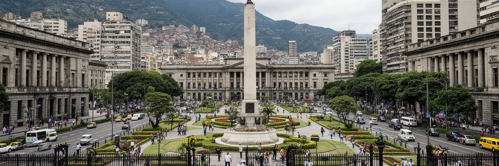
カラカスにはミラフローレス宮殿、国会、最高裁、中央銀行、各省庁、軍や治安機関、大使館が集まり、国の判断が都市の中心で可視化されます。ベネズエラの政治は石油収入、社会政策、選挙、制裁、移民、軍との関係、地域外交と深く結びつき、首都の街路にもその緊張が現れます。広場や幹線道路は祝典の舞台にも、抗議や警備の空間にもなります。行政機能が集中することは手続きや雇用を生む一方、政治危機が起きると交通、商業、学校、生活の安全へすぐ影響します。住民はニュースだけで政治を知るのではなく、物価、通貨、配給、公共サービス、警察の存在、職場の会話を通じて制度の状態を感じます。カラカスを読むには、権力の建物だけでなく、それに近い人と遠い人の距離を見る必要があります。政治的な立場が家族や近隣の関係を難しくすることもあり、沈黙や冗談も都市の言語になります。首都は国家の顔であると同時に、国家への期待と不信が集まる場所です。選挙の季節、記念式典、停電、燃料不足、外交発表は、官庁街だけでなく市場や学校の会話も変えます。国政が生活に近すぎる都市では、公共空間の使われ方そのものが政治への温度計になります。大使館の門、裁判所の周辺、中央銀行の発表、官庁での手続きは、市民が制度の近さと遠さを測る具体的な場です。首都の緊張は、日常の予定表にも入り込みます。
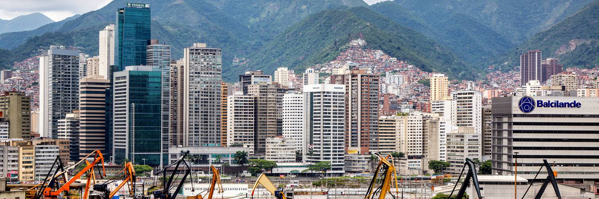
カラカスの経済を理解するには、石油国家としてのベネズエラを外せません。油田や製油所は都市の外にありますが、石油収入、国営企業、予算、為替、輸入、補助金、公共雇用の判断は首都で処理され、金融、商業、建設、消費の流れを左右してきました。石油価格の上昇期には公共事業、住宅、文化施設、輸入品、雇用が膨らみ、価格下落や制裁、管理の失敗、インフレは店の棚、給料、交通費、医薬品の不足へ波及します。カラカスには銀行、通信、メディア、大学、病院、小売、飲食、非公式商業が集まり、正式な経済と現金、外貨、送金、物々交換に近い工夫が同じ街で動きます。海外へ出た家族からの送金は、多くの世帯にとって生活を支える重要な回路になります。一方で、ドルを使える層とボリバル収入に依存する層の差は、購買力、医療、教育、住宅の差として見えます。石油は遠い資源ではなく、首都の食卓、給与、店舗、政治的忠誠、移民の判断に入り込む制度です。カラカスの経済は豊かな記憶と不安定な現在を同時に抱えています。近年は一部の商業地区に外貨建ての消費が戻る一方、公務員や年金生活者の実質所得は厳しいままです。明るい店舗と節約する家庭が近くに並ぶことが、首都経済の二重性をよく示します。企業の会計、屋台の値札、親族からの送金が別々の通貨感覚で動くため、都市の経済は一枚の価格表では読めません。
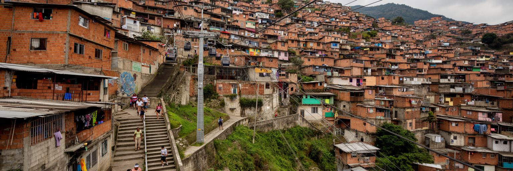
カラカスの丘陵には、赤茶色の住宅が斜面に密集するバリオが広がります。そこは単に貧困の風景ではなく、地方からの移住、家族の増築、近隣の助け合い、小商い、宗教、音楽、政治組織、学校、危険と誇りが重なる生活空間です。正式な都市計画が追いつかないまま住民が自力で家を建て、階段、細い道、共同水道、電線、ミニバス、ロープウェイが日常を支えます。斜面住宅は中心部に近い労働力を提供しながら、土地権利、土砂災害、火災、上下水、警察、ギャング、公共サービスの不安定さを抱えます。外から見ると谷の景観を縁取る色彩に見えますが、住民にとっては通勤、子育て、修理、医療、学習、治安の細部が毎日の課題です。バリオを改善するには、住民を排除する再開発ではなく、インフラ、法的安定、交通、学校、医療、公共空間を段階的に整える視点が必要です。カラカスの都市性は、谷底の官庁や高層住宅だけでなく、斜面で暮らす人々の労働と工夫によって成立しています。坂道を上る時間が、都市の不平等を具体的に示します。子どもが安全に学校へ通える階段、夜の照明、雨の日の排水、救急車が近づける道は、住宅政策の核心です。住民の組織と公共投資がかみ合う時、斜面は危険な周縁ではなく、尊厳ある都市の一部になります。バリオを都市の外側として扱わないことが、カラカス全体の回復の条件です。
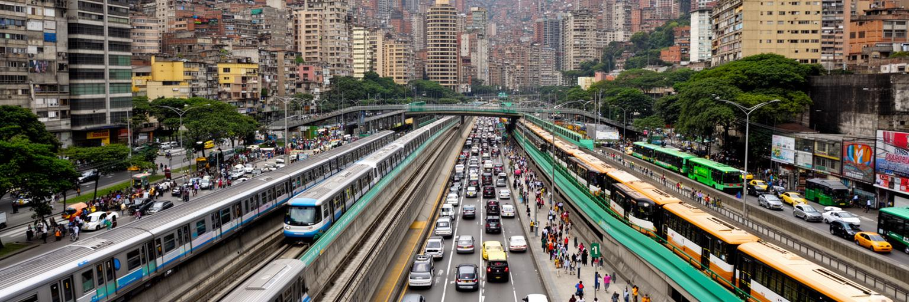
カラカスの移動は、地下鉄、バス、ミニバス、ロープウェイ、高速道路、徒歩、オートバイが組み合わさって成り立ちます。地下鉄はかつてラテンアメリカ有数の近代的な交通インフラとして整備され、谷底の主要地区を結び、通勤、通学、買い物、行政手続きを支えてきました。けれども経済危機、設備維持の不足、停電、混雑、安全不安は、公共交通の信頼性を揺らします。斜面のバリオでは駅までの距離と高低差が重く、ロープウェイや地域交通は単なる移動手段ではなく、都市参加への入口になります。高速道路は東西の谷をつなぐ一方、渋滞と分断も生みます。徒歩環境が弱い場所では、歩道の欠如、暑さ、夜間の安全、雨の排水が生活の質を左右します。交通は運賃だけでなく、待ち時間、治安、乗り換え、停電時の代替手段まで含めて評価されます。カラカスでは、誰が安全に早く移動でき、誰が長い坂と不確かな便に頼るのかが、教育、医療、雇用への距離を決めます。地下鉄の駅、バス停、階段、ロープウェイの支柱は、都市の公平性を測る装置です。移動の回復は、経済の回復と同じくらい日常の希望に直結します。駅の清掃、車両の照明、運行情報、女性や高齢者の安全は、派手ではなくても都市への信頼を作ります。交通が安定すれば、働く時間と家族の時間も取り戻しやすくなります。毎日の遅れが減ることは、生活の尊厳にも関わります。
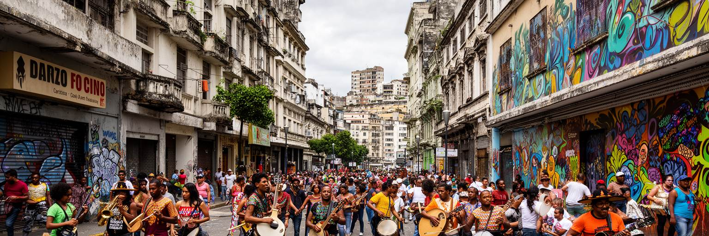
カラカスはベネズエラの文化とメディアの中心です。サルサ、ホローポ、ロック、ヒップホップ、クラシック、オーケストラ教育、劇場、映画、テレビ、ラジオ、新聞、デジタルメディアが首都の感情を形作ってきました。政治的な分断や経済危機の中でも、音楽学校、大学、劇場、スタジオ、路上の演奏、野球中継、家族の集まりは都市の会話を保ちます。テレビ産業や新聞は国民的な想像力を作りましたが、検閲、所有、資金不足、移民による人材流出、停電、広告市場の縮小は表現の場を狭めます。若い表現者は、限られた資源の中で動画、独立制作、地域イベント、海外とのネットワークを使いながら発信します。カラカスの文化は華やかな施設だけでなく、バリオの音、地下鉄の演奏、大学の壁画、野球場の歓声、家庭のプレイリストにもあります。芸術は逃避ではなく、危機の中で社会を記録し、笑い、怒り、祈り、別れを共有する方法になります。首都の文化的な力は、制度や資金が弱くなっても、人々が物語とリズムを手放さないところにあります。メディアと音楽は、分断された都市をつなぐ細い回路として働き続けています。移住した作家や演奏家が国外から発信する作品も、首都の記憶を更新します。離れた人と残った人の声が交わることで、カラカス文化は国境を越えた共同体になります。作品の中の街角は、遠くにいる人にも帰る場所を思い出させます。
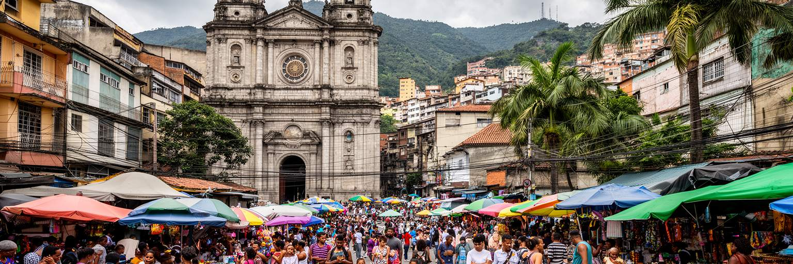
カラカスの日常には、カトリックの教会、福音派の礼拝、民間信仰、聖人への祈り、家族の祭礼、近隣の助け合いが深く入り込んでいます。危機が長引く社会では、宗教施設は礼拝の場だけでなく、食料支援、相談、葬儀、子どもの活動、高齢者の見守り、移民家族との連絡を支える場にもなります。聖週間、クリスマス、守護聖人の祭り、葬儀、誕生日、野球観戦後の集まりは、政治や経済の不安をいったん家庭と共同体の時間へ戻します。信仰は人々を支える一方、政治的な立場、ジェンダー、若者文化、社会運動との間で議論を生むこともあります。カラカスでは家族の範囲が国内外へ広がり、海外に移住した親族とのビデオ通話や送金も日常の儀礼に近くなります。祈りは教会の中だけでなく、病院の待合室、市場、バス停、停電の夜、坂道の家で行われます。都市を支えるのは大きな制度だけではなく、隣人が薬を探し、家族が食材を分け、教会が子どもを預かるような小さな関係です。信仰と日常文化は、カラカスの傷つきやすさと粘り強さを同時に見せます。祝祭の日には、遠くへ移った家族の不在も強く感じられます。それでも料理を作り、音楽を流し、祈りを交わす行為が、ばらばらになりかけた都市の関係を結び直します。日常の儀礼は、社会保障が薄い場所で互いを支える実務にもなります。今も大切です。
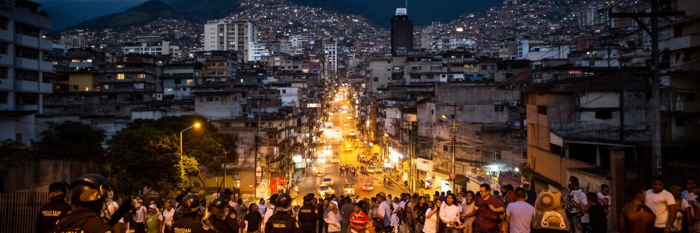
カラカスを語る時、治安の問題を避けることはできません。犯罪、警察、ギャング、政治的な緊張、抗議の記憶、夜間移動への不安は、住民がどの道を選び、何時に帰り、誰と移動し、どの公共空間を使うかを決めます。治安は統計だけでなく、体感、噂、家族の助言、近隣のルール、スマートフォンの扱い、タクシーの選び方に現れます。経済危機や公共サービスの弱さは犯罪だけでなく、警察への信頼、司法の遅れ、若者の選択肢にも影響します。一方で、外部から危険だけを強調すると、住民の普通の暮らし、文化、通勤、友情、笑い、地域の自衛や助け合いを見落とします。カラカスには、カラカソのような社会的爆発の記憶、政治デモ、弾圧への記憶、移民で空いた家族の記憶も残ります。安全への不安は都市を閉じますが、広場、学校、教会、市場、地下鉄を使い続けることは、都市を諦めない行為でもあります。治安政策に必要なのは強い警備だけではなく、雇用、教育、照明、交通、司法の信頼、若者の居場所です。カラカスの記憶は痛みを含みますが、それを公共の学びへ変える努力が都市の回復を支えます。安全な街路は、観光のためだけでなく、子どもが放課後に帰り、看護師が夜勤へ向かい、市場の店主が朝に店を開けるために必要です。日常の安心が戻るほど、都市は再び開かれます。記憶を語れる場所が増えることも、暴力の連鎖を断つための都市政策です。
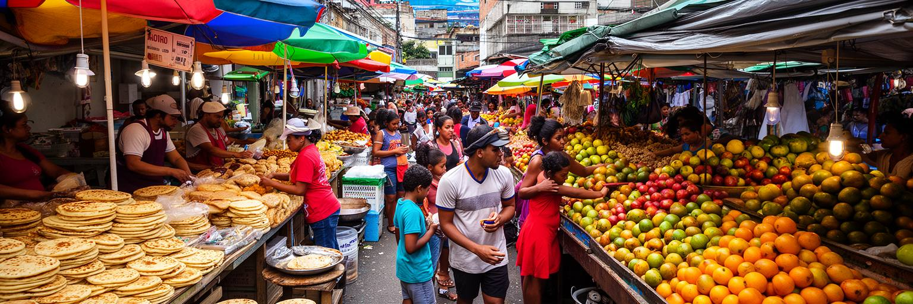
カラカスの食は、アレパ、エンパナーダ、カチャパ、パベジョン・クリオージョ、黒豆、チーズ、コーヒー、果物、屋台の軽食、家族の鍋を通じて日常を支えます。市場や小さな店は単なる買い物の場ではなく、物価、通貨、外貨、配給、輸入品、地元農産物、送金の力が見える場所です。経済危機の時期には、食材の入手、価格の変動、調理用ガスや電気、水の不安定さが家庭の献立を大きく変えました。家族は代替食材を使い、親族と分け合い、海外からの送金や荷物を頼り、市場の安い時間を探します。レストランやカフェは中間層と外貨経済の回復を映す一方、屋台や家庭料理は多くの住民の現実に近いです。食文化には移民の層もあります。イタリア、スペイン、ポルトガル、コロンビア、レバノンなどの影響はパン、菓子、パスタ、肉料理、店の名前に残ります。カラカスを食から読むと、石油経済の大きな話が毎日の買い物袋へつながることが分かります。市場の会話、値段の確認、家族への持ち帰り、コーヒーの短い休憩は、危機の中でも都市が生活のリズムを保つ方法です。食卓は不足だけでなく、工夫と記憶の場所でもあります。海外へ移った家族が恋しがる味は、都市への帰属を保つ媒体にもなります。市場のにおいと家庭のレシピは、離散した家族を同じ記憶へ戻します。食の安定は、政治や経済の議論を家庭の安心へ翻訳する最も身近な指標です。
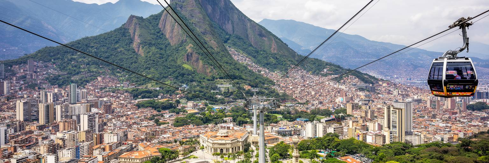
カラカスの観光は、アビラ山を抜きに語れません。ロープウェイや登山道から谷を見下ろすと、首都が山に守られ、同時に山によって限られていることがよく分かります。旧市街ではボリバル広場、カテドラル、歴史的な建物、政治の記憶をたどれます。カラカス大学都市は近代建築と芸術を結び、ユネスコ世界遺産として、石油時代の公共投資と教育への期待を今に伝えます。美術館、劇場、公園、野球場、食堂、カフェを組み合わせると、首都の文化的な厚みが見えてきます。ただし観光には安全情報、移動手段、時間帯、現地案内への配慮が欠かせません。観光客が見る山の美しさと、住民が毎日向き合う物価、交通、治安、停電は同じ都市にあります。カラカスを訪ねる価値は、危機のイメージを消すことではなく、その中でも都市が持つ景観、文化、記憶、生活の力を丁寧に見ることにあります。アビラ山の緑、大学都市のモザイク、旧市街の広場、家庭的な食堂は、首都の別々の顔を結びます。急がず、地元のリズムを尊重して歩くほど、カラカスは単なるニュースの舞台ではない都市として立ち上がります。ガイド、運転手、食堂、文化施設に利益が戻る旅であれば、観光は都市の回復にも小さく関われます。見る側の慎重さと敬意が、旅の質を決めます。山の眺望から始めて、広場、大学、食卓へ下りていく旅が、首都の層を最も自然に見せます。
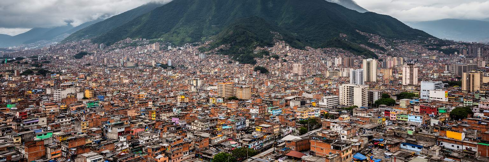
カラカスを読むことは、ベネズエラを一つの危機の物語に閉じないための作業です。ここにはアビラ山の美しさ、石油国家の制度、国政の緊張、近代建築、大学、地下鉄、音楽、野球、家族の食卓、斜面のバリオ、治安への不安、移民によって広がった家族のネットワークが同時にあります。経済指標だけを見れば不安定さが目立ちますが、都市の中を見れば、人々が通勤し、祈り、学び、食材を探し、音楽を鳴らし、海外の家族と連絡しながら生活を組み直していることが分かります。首都の権力は谷底に集まりますが、都市を支える労働と記憶は斜面や市場や駅にもあります。カラカスの重要性は、政治ニュースの中心であることだけではありません。山と海に近い地理、石油に依存した国家形成、公共サービスの脆さ、文化の豊かさ、移民時代の家族関係が、狭い谷の中で互いに見えることにあります。街を理解するには、危険だけでも、郷愁だけでも足りません。緑の山、壊れたインフラ、強い音楽、祈り、笑い、警戒、送金、記憶を同じ都市の要素として読む必要があります。そこにカラカスの厳しさと深さがあります。政治の中心に近い人、斜面から通う人、国外へ出た人、戻る機会を待つ人の視線を重ねると、首都は固定された場所ではなく、移動する家族と記憶の結節点になります。カラカスは、国家の失敗だけでなく、都市がなお関係を保とうとする力を示します。